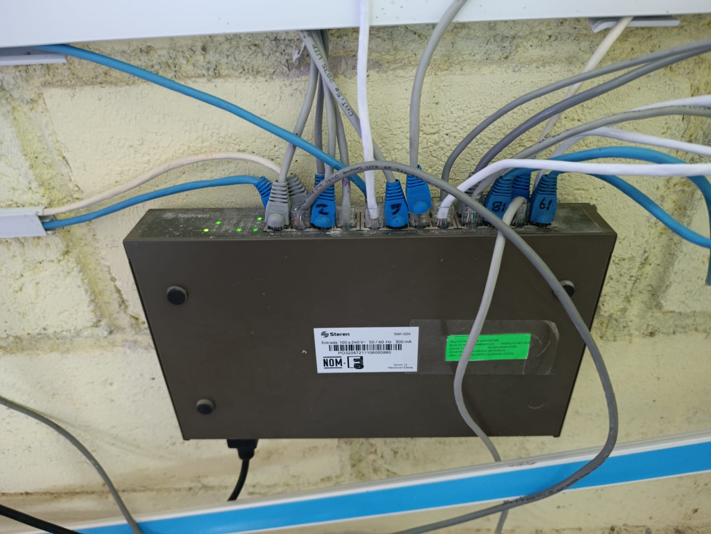
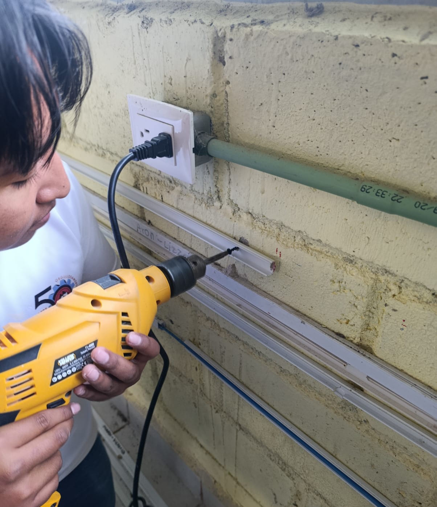
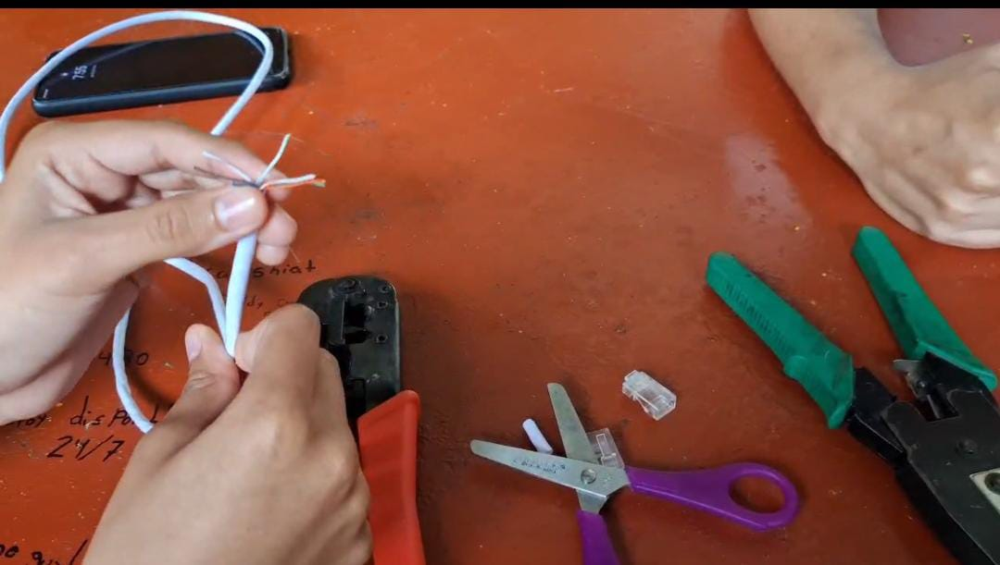
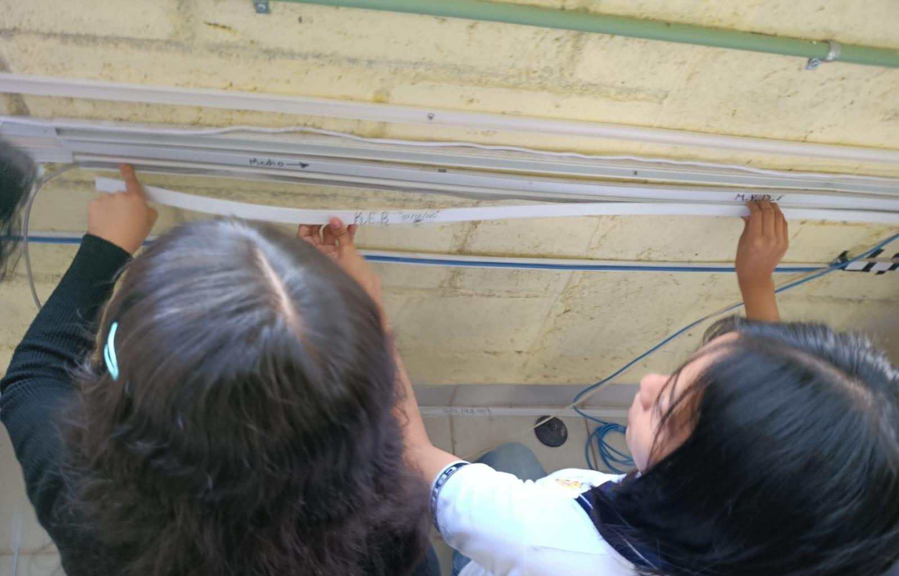

¿Qué son las redes alámbricas?
Las redes alámbricas son sistemas que conectan dispositivos mediante cables físicos para compartir información, internet y recursos tecnológicos.
Destacan por ofrecer una conexión más estable que las redes inalámbricas, ya que utilizan medios físicos para transmitir datos con menor interferencia.
Actualmente son muy utilizadas en empresas y centros educativos debido a su alta velocidad y confiabilidad.

¿Cómo se construyen?
Para crear una red alámbrica se realiza una planeación del espacio y se instala cableado Ethernet conectado a routers y switches.
- Instalación de cableado.
- Configuración de dispositivos.
- Asignación de direcciones IP.
- Pruebas de conexión.
La correcta instalación del cableado permite reducir interferencias, mejorar la velocidad de conexión y facilitar futuras reparaciones o ampliaciones de la red.

Requerimientos técnicos
Una red necesita diversos materiales y equipos para garantizar una conexión rápida y estable.
- Cables Ethernet.
- Conectores RJ45.
- Switches y routers.
- Tarjetas de red.
- Pinza ponchadora.
La calidad de los materiales influye directamente en el rendimiento de la red, por lo que es recomendable utilizar cables y dispositivos certificados.

Aspectos de seguridad
La seguridad ayuda a proteger la información y evitar accesos no autorizados dentro de la red.
- Contraseñas seguras.
- Firewalls.
- Actualizaciones constantes.
- Control de acceso.
- Respaldos de información.
Una red protegida evita pérdidas de información y ayuda a mantener un funcionamiento seguro para todos los usuarios conectados.
Tips para una red eficiente
Un mantenimiento adecuado mejora la velocidad, organización y funcionamiento de la red.
- Organizar el cableado.
- Usar materiales de calidad.
- Evitar cables dañados.
- Dar mantenimiento periódico.
- Monitorear el rendimiento.
Un mantenimiento constante permite detectar errores rápidamente y prolonga la vida útil de los equipos y conexiones.
